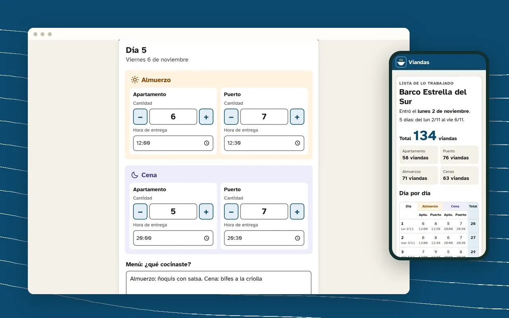
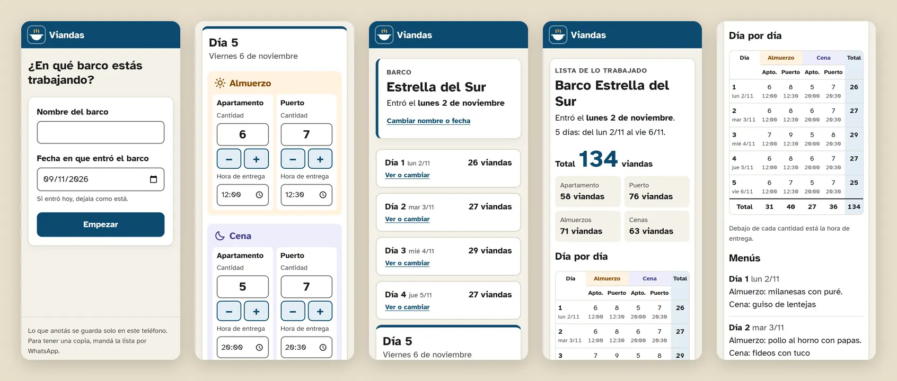
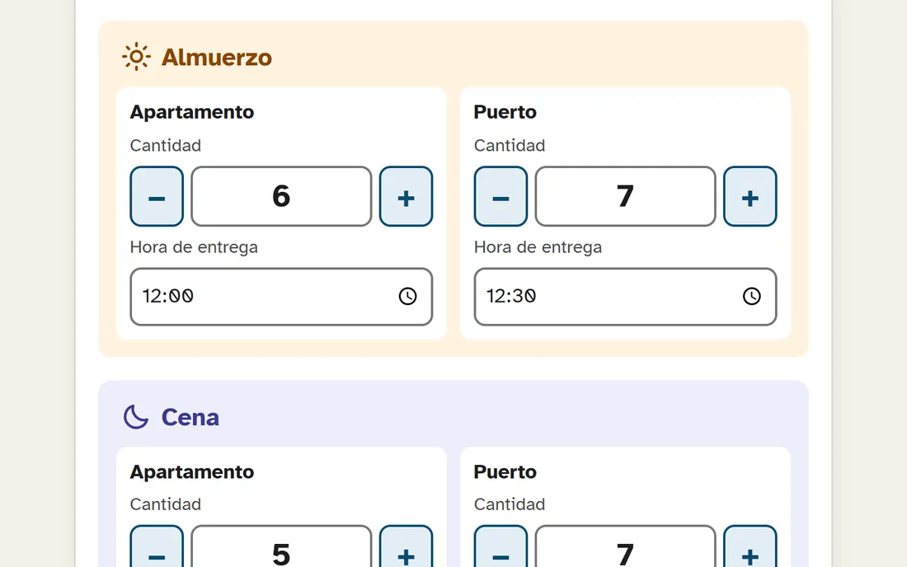
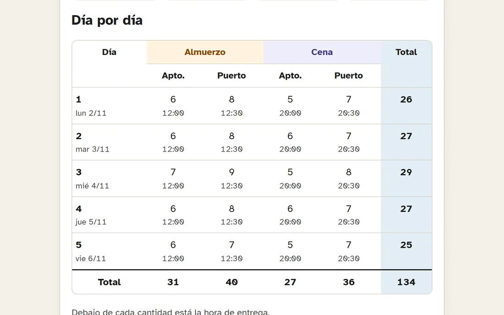

Caso de estudio · 2026
Viandas: una app para que mi mamá anote su trabajo sin pelearse con la tecnología
Una web app para anotar, día por día, las viandas que entrega mientras trabaja para un barco, y obtener la lista total al terminar.
- Mi rol
- Relevamiento, diseño y desarrollo (individual)
- Contexto
- Proyecto personal, hecho para una persona real
- Herramientas
- HTML, CSS, JavaScript, GitHub Actions

1 · Necesidad
Anotar todo, todos los días, sin complicarse
Mi mamá cocina viandas para una empresa. Cada trabajo está atado a un barco: mientras dura, entrega almuerzo y cena en dos lugares, un apartamento y el puerto. Necesita registrar día por día cuántas viandas llevó a cada lugar, a qué hora y qué cocinó.
No sabe de antemano cuántos días va a durar: puede ser una semana o un mes. Al terminar tiene que poder mostrar cuántas viandas hizo en total y para qué barco.
Y no se lleva bien con la tecnología. Una planilla o una app llena de menús no le servía: tenía que poder usarla sin que nadie se la explique.
2 · Proceso
Partir de cómo ella cuenta su trabajo
- Su recorrido. Primero el barco, después la fecha de entrada, después cada día con almuerzo, cena y menú, y al final la lista. Ese orden se convirtió en las tres pantallas de la app.
- Sus palabras. “Apartamento”, “Puerto”, “viandas”, “menú”. Ningún término técnico ni botón de “Guardar”.
- Ajustes en el camino. Al revisar la idea sumamos la hora de entrega de cada vianda, que también necesitaba registrar.
- Pruebas antes de dársela. Recorrí el flujo completo con un script en 375, 768 y 1280 px. Así apareció un error que hacía perder lo escrito si se cambiaba rápido de campo, y lo corregí.
3 · Solución
Decisiones para alguien que no se lleva bien con la tecnología



- Letra y botones grandes. Texto base de 20 px con Atkinson Hyperlegible y botones de al menos 48 px de alto.
- Nada que guardar. Cada cambio se guarda solo en el teléfono y la app lo confirma. Al agregar un día se copian las horas del anterior.
- Nada se pierde sin preguntar. Borrar un día o terminar un barco pide confirmación, y el botón Atrás del celular vuelve a la pantalla anterior en vez de cerrar la app.
- Funciona sin señal. Después de la primera visita abre aunque no haya conexión en el puerto, y se puede instalar en la pantalla de inicio.
- La lista viaja por WhatsApp. Con un botón se manda el resumen de cada día y los totales, o se imprime.
4 · Resultado
Lo que quedó funcionando
- 3 pantallas: el barco, los días y la lista
- 100 en las 4 categorías de Lighthouse mobile
- 0 violaciones de axe en todo el flujo, en 375, 768 y 1280 px
Qué aprendí
Que diseñar para una persona concreta ordena las prioridades: acá importaba más que cada botón se entienda a la primera que cualquier detalle visual. Y que las herramientas no reemplazan a esa persona: Lighthouse y axe dicen que la app es accesible, pero voy a saber si le sirve cuando mi mamá la use durante un barco entero. Ese es el próximo paso.